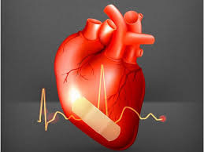

हृदय पेशी

हृदय पेशी हृदय की दीवारों में पायी जाने वाली अनैच्छिक पेशियाँ होती हैं। अतः पेशी तन्तु शाखान्वित तथा एककेन्द्रकीय होते हैं। इस लेख में केवल मानव शरीर से संबंधित उल्लेख है।
क्रियाविधि
हृदय पेशियाँ जीवन–पर्यन्त बिना रुके, बिना थके लय के साथ संकुचित एवं शिथलित होकर गति करती रहती हैं। जिसके फलस्वरूप शरीर में निरन्तर रक्त परिसंचरण होता रहता है।